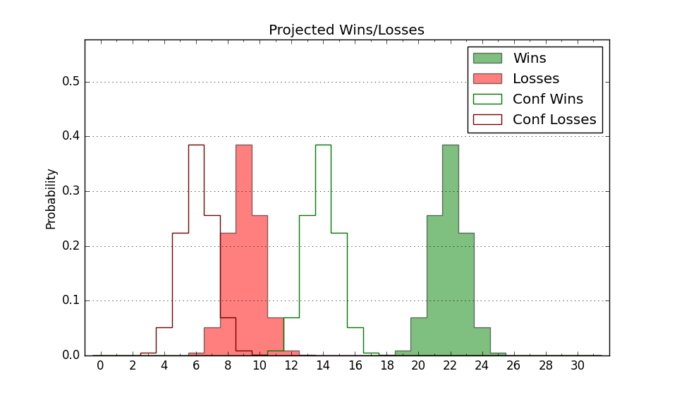

| Home | Game Probabilities | Conferences | Preseason Predictions | Odds Charts | NCAA Tournament |
| City: | Clemson, South Carolina | |
| Conference: | ACC (1st)
| |
| Record: | 10-3 (Conf) 18-6 (Overall) | |
| Ratings: | Comp.: 11.1 (75th) Net: 11.2 (75th) Off: 106.6 (107th) Def: 95.5 (60th) SoR: 39.5 (57th) |
| Remaining | ||||||
|---|---|---|---|---|---|---|
| Date | Opponent | Win Prob | Pred. | |||
| 2/11 | @ North Carolina (40) | 23.2% | L 69-77 | |||
| 2/15 | Florida St. (193) | 86.8% | W 80-66 | |||
| 2/18 | @ Louisville (307) | 85.5% | W 75-62 | |||
| 2/22 | Syracuse (87) | 68.6% | W 74-68 | |||
| 2/25 | @ North Carolina St. (48) | 26.3% | L 69-77 | |||
| 2/28 | @ Virginia (15) | 15.1% | L 59-70 | |||
| 3/4 | Notre Dame (191) | 86.6% | W 76-64 | |||
| Previous | Game Score | |||||
| Date | Opponent | Win Prob | Result | Off | Def | Net |
| 11/7 | The Citadel (335) | 96.6% | W 80-69 | -1.4 | -15.6 | -17.1 |
| 11/11 | @South Carolina (280) | 80.9% | L 58-60 | -27.5 | 11.0 | -16.5 |
| 11/15 | USC Upstate (277) | 93.4% | W 81-70 | 13.8 | -22.1 | -8.3 |
| 11/18 | Bellarmine (265) | 92.9% | W 76-66 | 9.7 | -17.2 | -7.5 |
| 11/21 | Loyola MD (337) | 96.7% | W 72-41 | -11.7 | 21.4 | 9.7 |
| 11/25 | (N) Iowa (31) | 31.9% | L 71-74 | -4.7 | 5.9 | 1.2 |
| 11/26 | (N) California (260) | 87.4% | W 67-59 | 10.3 | -8.1 | 2.2 |
| 11/29 | Penn St. (55) | 56.9% | W 101-94 | 11.8 | -7.1 | 4.7 |
| 12/2 | Wake Forest (73) | 63.7% | W 77-57 | -0.2 | 23.9 | 23.8 |
| 12/7 | Towson (149) | 82.5% | W 80-75 | 13.4 | -17.9 | -4.5 |
| 12/10 | (N) Loyola Chicago (263) | 87.5% | L 58-76 | -30.2 | -16.0 | -46.2 |
| 12/17 | (N) Richmond (153) | 72.2% | W 85-57 | 16.3 | 16.4 | 32.6 |
| 12/21 | @Georgia Tech (205) | 69.5% | W 79-66 | 10.7 | 1.2 | 11.9 |
| 12/30 | North Carolina St. (48) | 54.8% | W 78-64 | 8.9 | 14.6 | 23.6 |
| 1/4 | @Virginia Tech (54) | 27.9% | W 68-65 | -5.3 | 19.8 | 14.4 |
| 1/7 | @Pittsburgh (58) | 29.0% | W 75-74 | 17.5 | -9.4 | 8.1 |
| 1/11 | Louisville (307) | 95.3% | W 83-70 | 10.3 | -19.5 | -9.1 |
| 1/14 | Duke (33) | 47.7% | W 72-64 | 7.2 | 6.9 | 14.1 |
| 1/17 | @Wake Forest (73) | 34.0% | L 77-87 | 1.4 | -14.2 | -12.8 |
| 1/21 | Virginia Tech (54) | 56.8% | W 51-50 | -29.4 | 27.7 | -1.6 |
| 1/24 | Georgia Tech (205) | 88.6% | W 72-51 | 2.2 | 11.7 | 13.9 |
| 1/28 | @Florida St. (193) | 65.8% | W 82-81 | 2.3 | -6.2 | -3.9 |
| 1/31 | @Boston College (164) | 61.1% | L 54-62 | -19.0 | 2.9 | -16.1 |
| 2/4 | Miami FL (32) | 47.0% | L 74-78 | 0.4 | -5.3 | -5.0 |
| Stats & Trends | |||||
|---|---|---|---|---|---|
| Current | Day | Week | Month | Season | |
| Composite | 11.1 | -0.0 | -0.2 | -1.9 | +1.9 |
| Comp Rank | 75 | -1 | -3 | -12 | +7 |
| Net Efficiency | 11.2 | -0.0 | -0.3 | -2.3 | -- |
| Net Rank | 75 | -1 | -3 | -15 | -- |
| Off Efficiency | 106.6 | -0.0 | -0.2 | -2.1 | -- |
| Off Rank | 107 | -2 | -7 | -52 | -- |
| Def Efficiency | 95.5 | -0.0 | -0.1 | -0.2 | -- |
| Def Rank | 60 | -- | -- | +17 | -- |
| SoS Rank | 127 | -2 | +14 | +34 | -- |
| Exp. Wins | 21.9 | -0.0 | -0.5 | -0.4 | +5.4 |
| Exp. Conf Wins | 13.9 | -0.0 | -0.5 | -0.4 | +4.6 |
| Conf Champ Prob | 12.5 | +0.2 | -8.0 | -23.3 | +10.6 |

| Advanced Stats | ||
|---|---|---|
| Stat | Value | Rank |
| Off Eff FG % | 0.540 | 57 |
| Off Ast Ratio | 0.161 | 65 |
| Off ORB% | 0.206 | 330 |
| Off TO Rate | 0.154 | 165 |
| Off FT Ratio | 0.362 | 58 |
| Def Eff FG % | 0.448 | 26 |
| Def Ast Ratio | 0.122 | 37 |
| Def ORB% | 0.235 | 62 |
| Def TO Rate | 0.148 | 236 |
| Def FT Ratio | 0.312 | 179 |